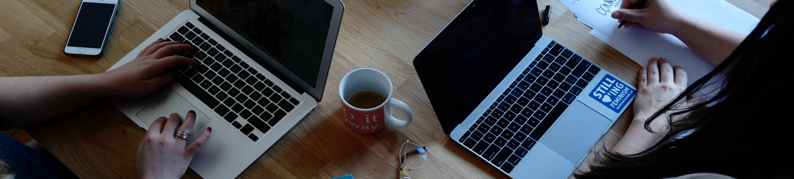

Women's Collections
“Women’s rights are an essential part of the overall human rights agenda, trained on the equal dignity and ability to live in freedom all people should enjoy.” - Ruth Bader Ginsburg